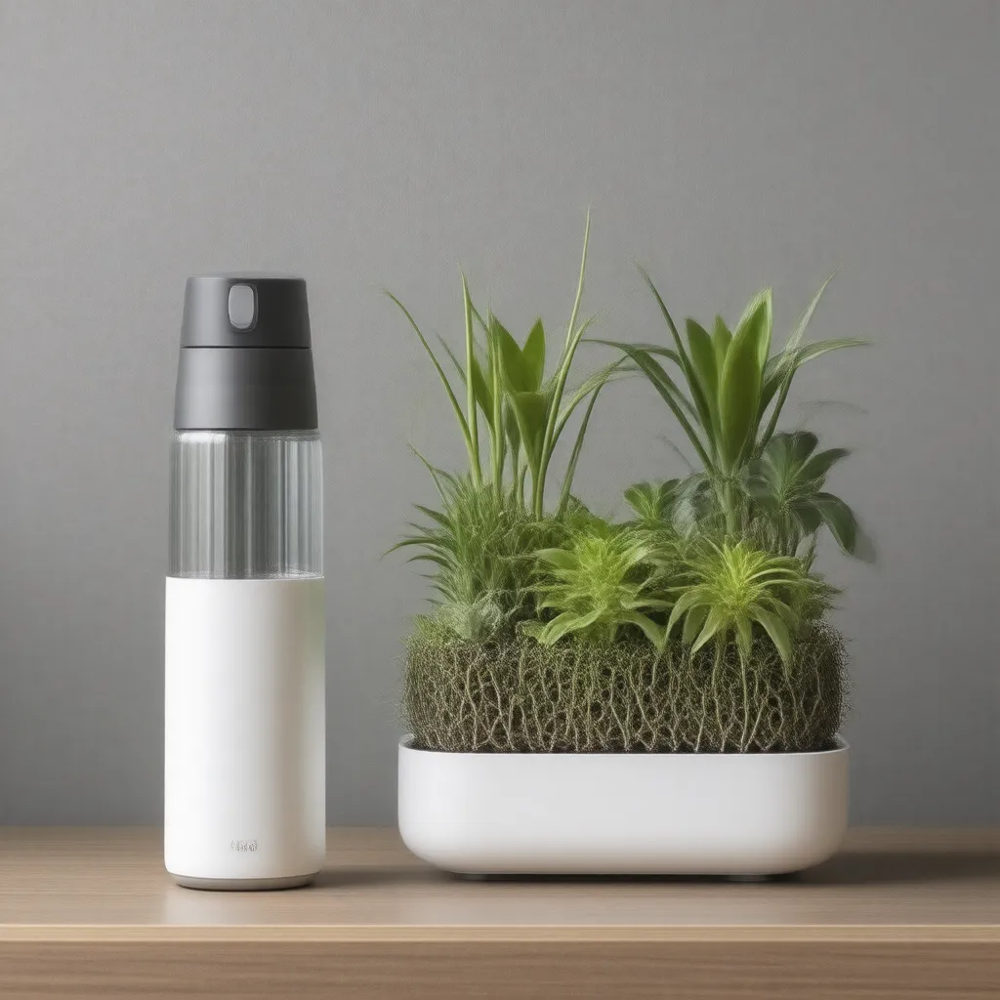

H2O* is a dual-purpose smart ecosystem Product that seamlessly integrates personal hydration and plant care into daily life. It combines a sleek, sensor-equipped water bottle with a modular smart planter, linked via an app to create a symbiotic routine where caring for yourself and your plant reinforces both habits.
Problem Identification
Introduction
Hydration and plant care are two critical aspects of daily life that often go unnoticed or are inconsistently maintained. In India, factors such as climate conditions, urban lifestyle, and lack of awareness contribute to dehydration and poor plant care habits. This study explores these challenges in detail using available data from surveys, research articles, and credible sources.
Hydration Challenges
1. Key issues
Dehydration Prevalence: Studies indicate that around 75% of Indians do not consume the recommended daily water intake of 2.5-3.5 liters.
Climate Impact: Hot and humid regions like Rajasthan, Tamil Nadu, and Gujarat experience higher dehydration risks.
Work & Lifestyle Factors: A survey by the Indian Journal of Public Health found that office workers often ignore hydration due to workload and lack of reminders.
Health Consequences: Chronic dehydration leads to fatigue, kidney stones, and urinary tract infections, as highlighted in a report by the All India Institute of Medical Sciences (AIIMS).
2. Data & Sources
Survey by The Times of India (2023): Found that 60% of urban Indians drink less than 2 liters of water daily.
AIIMS Report (2022): Dehydration contributes to 15% of hospital visits related to kidney issues.
Indian Journal of Public Health (2021): Office workers and students are at the highest risk of dehydration due to irregular drinking habits.
Plant Care Challenges
1. Key issues
Urbanization & Space Constraints: Growing plants in high-rise apartments with limited sunlight is a challenge.
Lack of Awareness: Many individuals are unaware of proper plant watering schedules, leading to overwatering or underwatering.
Seasonal Challenges: Monsoons lead to waterlogging, while summers cause extreme dryness, making plant care inconsistent.
Cultural Shifts: While traditional households had gardens, urban families now struggle to maintain indoor plants due to lack of time and knowledge.
Data & Sources
Survey by National Horticulture Board (2023): 58% of urban residents find it difficult to maintain plants due to time constraints.
Agricultural Research Institute Study (2022): Overwatering and poor drainage were responsible for the death of 40% of household plants in metro cities.
Indian Environment & Gardening Report (2021): Only 35% of Indian homes actively engage in plant care, compared to 60% globally.
Core Problem Statement
Hydration Issue: Lack of awareness, lifestyle constraints, and environmental factors cause inadequate water consumption, leading to health concerns.
Plant Care Issue: Urbanization, misinformation, and seasonal variations contribute to inconsistent plant care, affecting sustainability efforts.
Conclusion & Need for Smart Solutions
Given the data-backed evidence, there is a pressing need for smart, automated solutions like H2O*, which seamlessly integrates hydration tracking with plant care. By leveraging technology and behavioral reinforcement, Indian users can adopt healthier, more sustainable routines.